Vrstvy a masky
Pokud jste se dosud nesetkali s žádným grafickým editorem, tak je třeba se seznámit s konceptem vrstev a masek. Na co se podívat:
Vrstvy
Často bude cílem složit více samostatných obrázků dohromady. Za tímto účelem řada editorů pracuje s vrstvami, které jsou následně v kombinaci s maskami a poloprůhledností složeny dohromady. Operaci která bude aplikována při skládání snímků je možné zvolit.
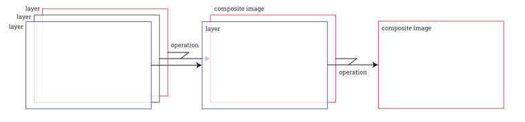
- každá vrstva může mít masku či alfa kanál, které rozhodují o poloprůhlednosti
- vrstvy lze skládat odpředu dozadu, či naopak, postupy se liší provedením operací
Základní nástroje pro výběr
Základním úkolem je často izolovat objekt ze scény, aby ho bylo možné vložit do scény jiné. Jednoduchý postup pro vyjmutí objektu ze scény:
- použít vybraný nástroj pro výběr
- laso - vybranou oblastí je polygon
- magická hůlka - vybírá oblast dle barvy/jasu, je možné kombinovat, dobé pro kontrastní oblasti
- nůžky - umožňuje přichytávání
- pro přechod do módu umužňující rychlou úpravu masky
- dodatečné úpravy vybrané oblasti pomocí štětce nebo tužky
- copy-paste do nové vrstvy
Výběr pomocí masky
Copy-paste postupem dojde ke ztrátě jakékoliv původní informace a výřez je možné pouze zmenšovat, není možné se vrátit zpět. Tomu je možné předejí pomocí masky:
- vezmu fotografii ze které budu vyřezávat src
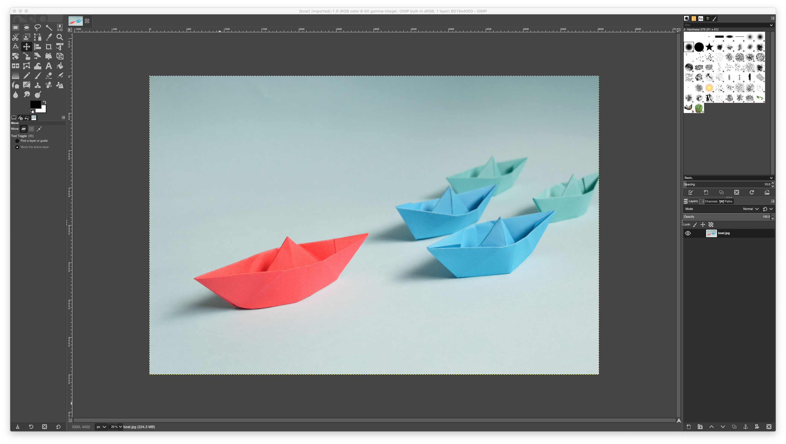
- vyberu si nástroj pro výběr
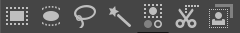
- nahrubo vyberu objekt
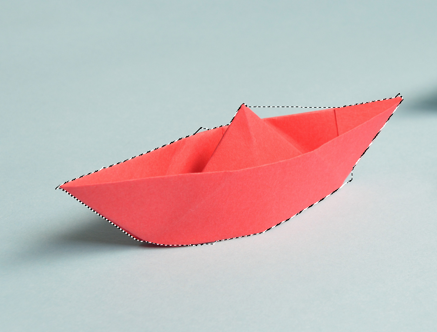
- v menu zvolím
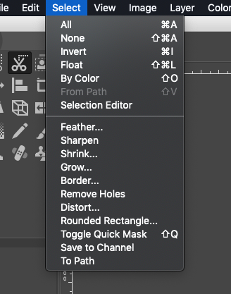
- po přepnutí
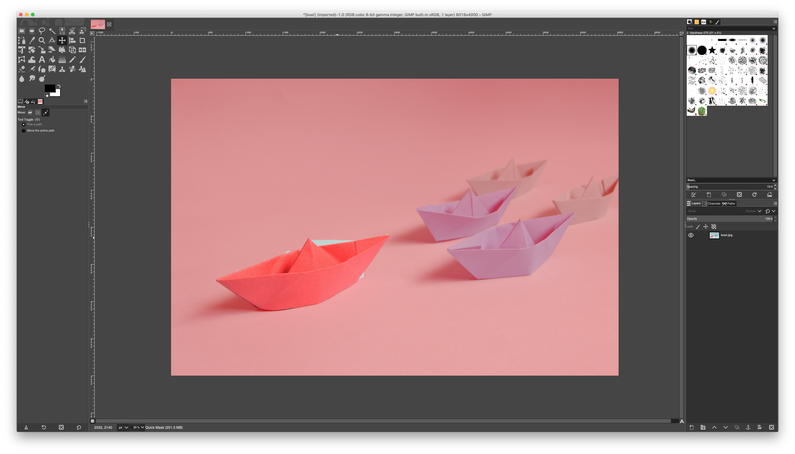
- v režimu úpravy masky vezmu vhodný štětec/tužku/gumu...
- ...a s vhodným nastavením poloměru, tvrdosti atd. opravím špatně vybrné části
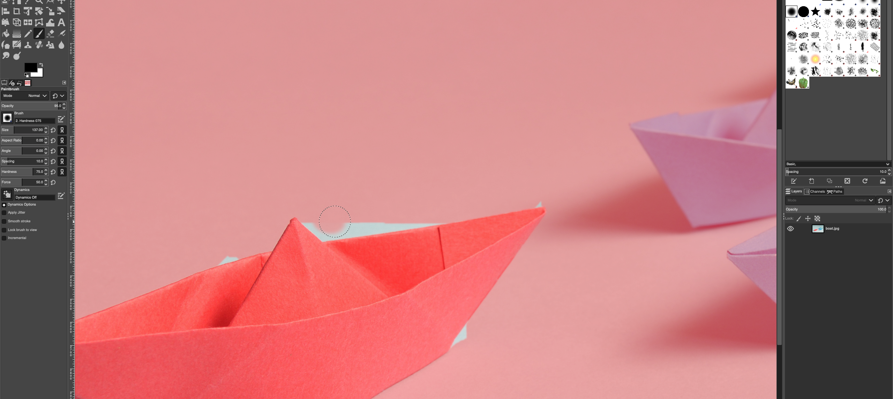
- když jsem s úpravou spokojený, přepnu se zpět z režimu Quick Mask
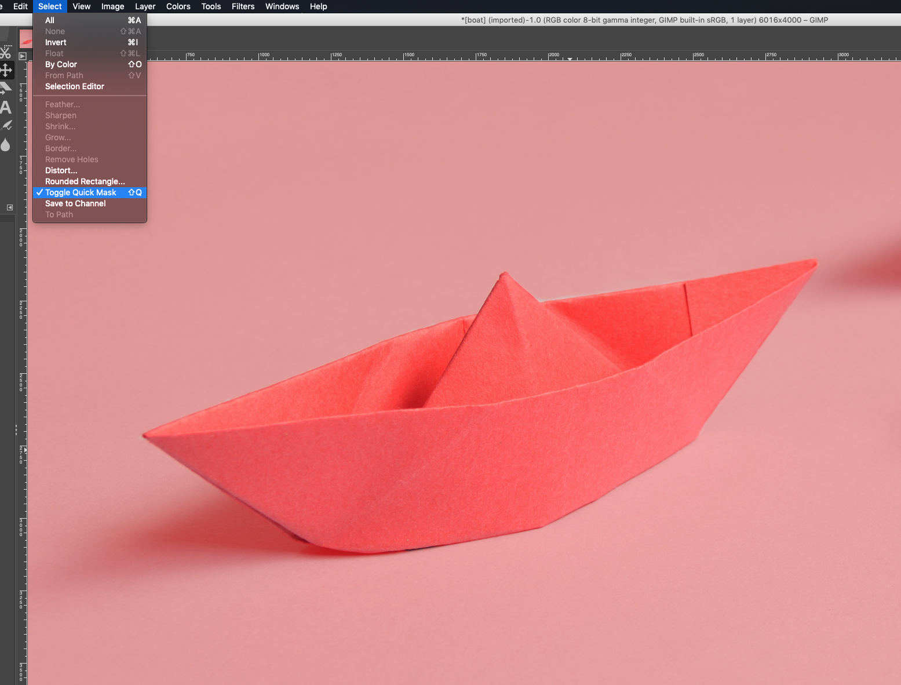
- v pravém dolním rohu vyberu ikonu masky
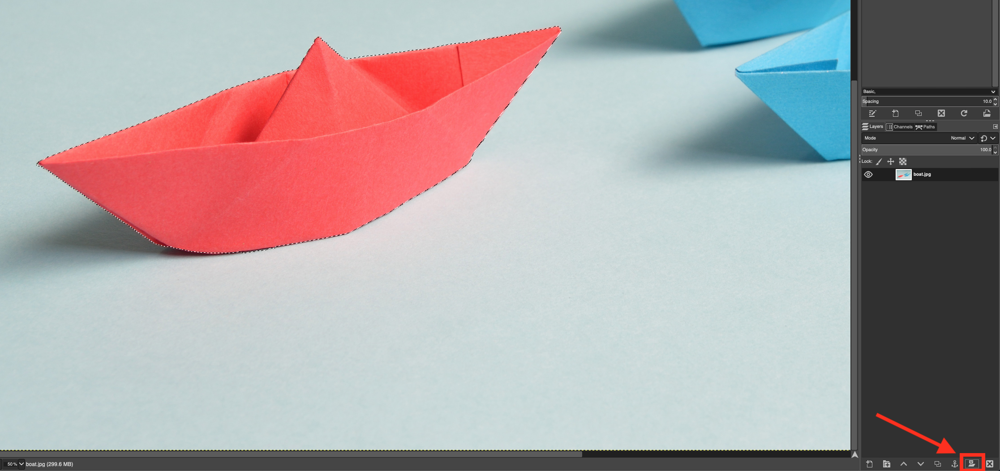
- vyskočí dialog, zvolím možnost Selection a potvrdím Add
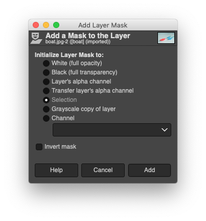
- a dostanu izolovaný objekt
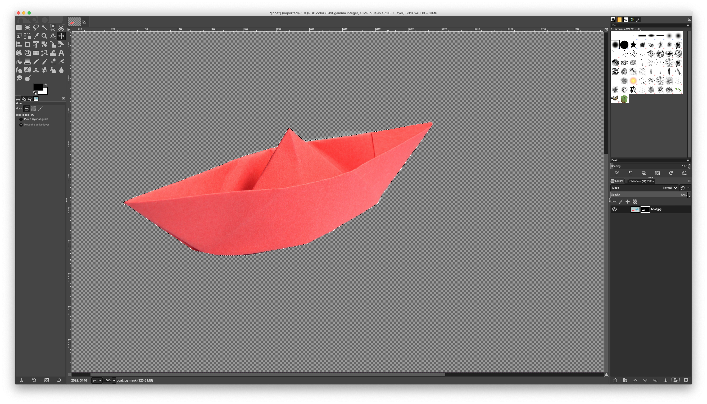